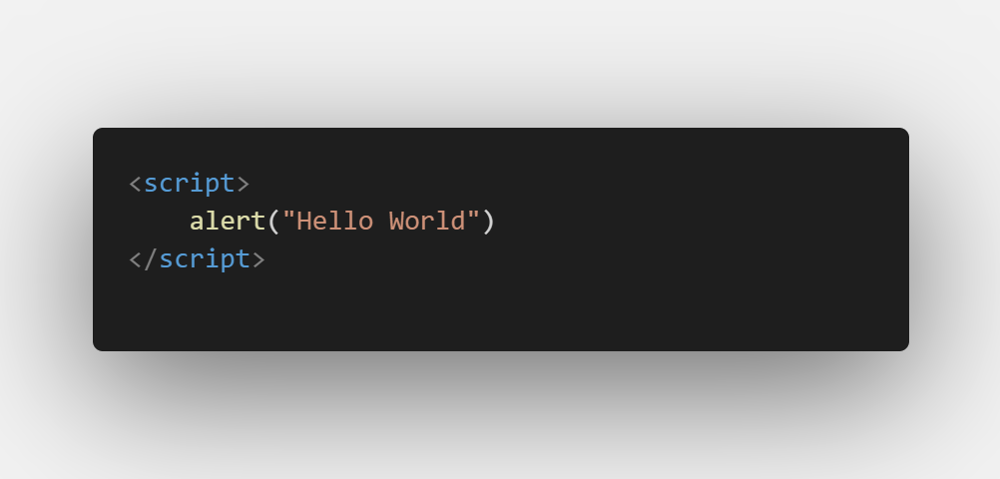
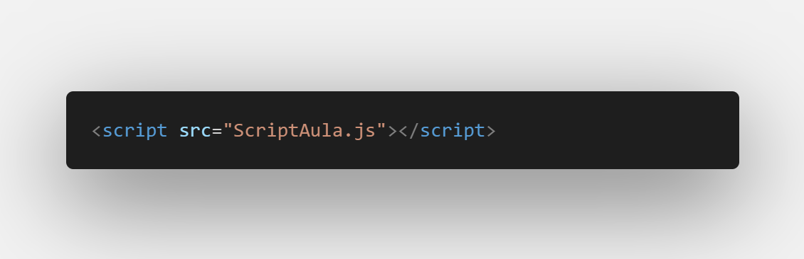
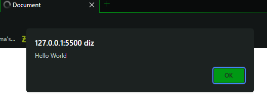

1/26 - Primeiro contato + Hello World (revisão)
JavaScript é uma linguagem de programação usada principalmente para adicionar interatividade e dinamismo a páginas web. Ela é executada no navegador do usuário e permite criar recursos como validações de formulários, animações, atualizações de conteúdo sem recarregar a página (AJAX), entre outros. JavaScript também é usado em ambientes de servidor (Node.js) para criar aplicativos web e backends.
O script inline em HTML é quando você coloca o código JavaScript diretamente no documento HTML, dentro da tag
<script>. O código é interpretado e executado pelo navegador conforme ele encontra essa tag durante a
renderização da página.
Por exemplo:

O JavaScript Externo "External JavaScript" é utilizdo para separar o código JavaScript do documento HTML principal, armazenando-o em um arquivo externo. Isso promove a organização e reutilização do código. Através da tag <script> com o atributo src, você referencia o arquivo externo contendo o código JavaScript, que é carregado e executado pelo navegador. Essa abordagem também facilita a manutenção e otimiza o carregamento da página, pois o arquivo externo pode ser armazenado em cache.

Diante das duas formas o resultado será o mesmo:
